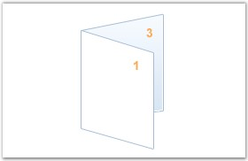

Booklets are documents with multiple pages arranged on sheets of paper. When folded, the paper will represent the correct page order. Essential PDF provides support for creating booklets, which produces the resulting PDF document that can be printed and stapled in the center to form a booklet.
For example, assume that you have a 13 page document. Creating a booklet of the document will result in a PDF file with 7 pages( (page 1, null), (page2, page13), (page3, page12), ...((page7, page8).
Figure 59: Pages Arranged in PDF
Figure 60: Pages Arranged in Booklet Layout

Figure 61: Pages Printed and Folded into New Booklet
PdfBookletCreator class is used for creating Booklets. The following code example illustrates how to create the Booklet.
|
[C#]
// Load a PDF document. PdfLoadedDocument ldoc = new PdfLoadedDocument("SamplePDF.pdf");
// Create booklet with two sides. PdfDocument doc = PdfBookletCreator.CreateBooklet(ldoc, new SizeF(500, 500), true);
// Save the document. doc.Save("Sample.pdf"); |
|
[VB.NET]
' Load a PDF document. Dim ldoc As PdfLoadedDocument = New PdfLoadedDocument("SamplePDF.pdf)
' Create booklet with two sides. Dim doc As PdfDocument = PdfBookletCreator.CreateBooklet(ldoc, New SizeF(500, 500), True)
' Save the document. doc.Save("Sample.pdf") |
The following code example illustrates the overloads of the CreateBooklet method.
|
[C#]
CreateBooklet(PdfLoadedDocument, SizeF) CreateBooklet(PdfLoadedDocument, SizeF, Boolean) CreateBooklet(String, String, SizeF) CreateBooklet(PdfLoadedDocument, SizeF, Boolean, PdfMargins) CreateBooklet(String, String, SizeF, Boolean) |
You can also apply margins to the booklets at the time of creating the booklet by using one of the preceding overloads.
The following code example illustrates how to create a booklet with the following overload: CreateBooklet(PdfLoadedDocument, SizeF, Boolean, PdfMargins).
|
[C#]
// Load a PDF document. PdfLoadedDocument ldoc = new PdfLoadedDocument("SamplePDF.pdf");
// Specify the margin. PdfMargins margin = new PdfMargins(); margin.All = 10;
// Create booklet with two sides. PdfDocument doc = PdfBookletCreator.CreateBooklet(ldoc, new SizeF(500, 500), true, margin);
// Save the document. doc.Save("Sample.pdf"); |
|
[VB.NET]
' Load a PDF document. Dim ldoc As PdfLoadedDocument = New PdfLoadedDocument("SamplePDF.pdf)
' Specify the margin. Dim margin As PdfMargins = New PdfMargins() margin.All = 10
' Create booklet with two sides. Dim doc As PdfDocument = PdfBookletCreator.CreateBooklet(ldoc, New SizeF(500, 500), True, margin)
' Save the document. doc.Save("Sample.pdf") |